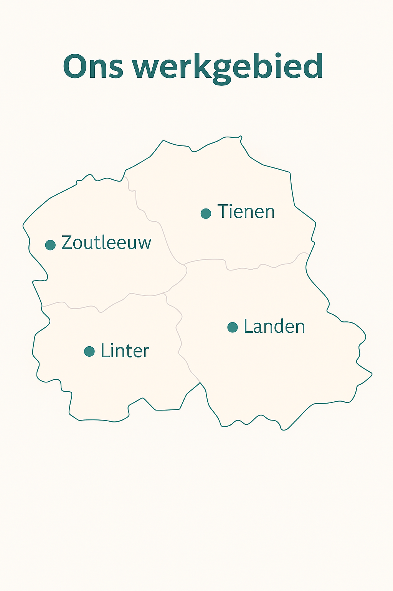

Welkom
Thuisverpleegkundige Jess en haar team staan klaar om jou of je dierbaren te ondersteunen met professionele zorg aan huis.
In uw omgeving
In jouw vertrouwde omgeving en het comfort van je eigen woning. In de regio’s Zoutleeuw, Landen, Linter & Tienen. Woon je net buiten ons werkgebied, aarzel niet om ons te contacteren.
Onze missie
We bieden warme, deskundige en toegankelijke zorg op maat, met respect voor ieders situatie. Persoonlijk contact, discretie en continuïteit van zorg zijn voor ons essentieel.
Waarom kiezen voor Jess en Team?
- ✅ Altijd een vertrouwd gezicht aan huis
- ✅ 7/7 beschikbaar, ook op zon- en feestdagen
- ✅ We werken samen met alle hulpverleners (huisarts, specialist, sociale dienst)
- ✅ Erkende en geconventioneerde verpleegkundige
- ✅ Samenwerking met alle mutualiteiten aan terugbetalingstarief (derde betalingsregeling)
Voor wie zijn wij er?
Wij bieden zorg op maat voor jong en oud, zowel tijdelijk als langdurig. Of het nu gaat over verzorging na een operatie, chronische aandoeningen of palliatieve ondersteuning, wij staan voor je klaar.
